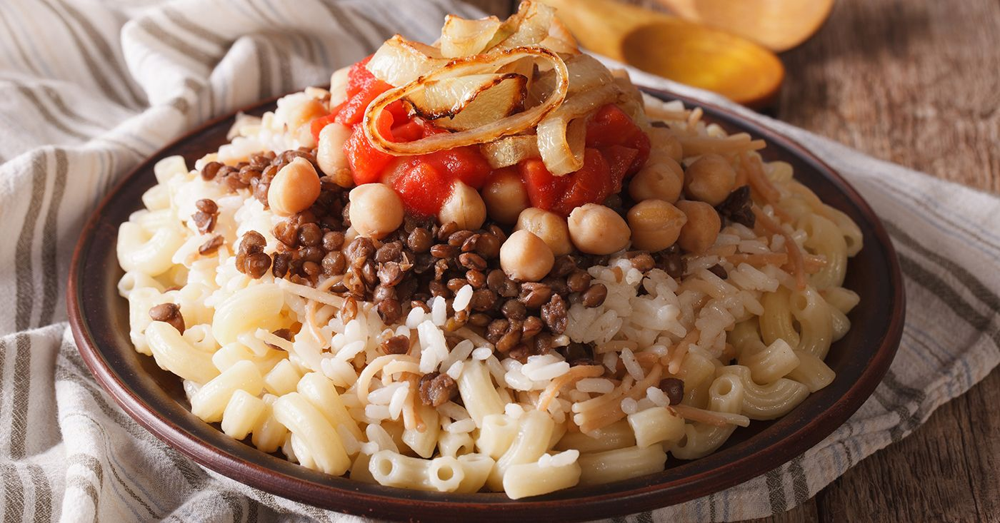

A bold mix of rice, lentils, pasta, and chickpeas topped with spicy tomato sauce and crispy onions.
Home

A celebration dish that blends crispy bread, fluffy rice, and tender meat soaked in garlicky vinegar broth.
Koshari is the undisputed king of Egyptian comfort food — a vegan-friendly, energy-packed meal found on every street corner.
It’s a symphony of flavors and textures: lentils for earthiness, pasta and rice for comfort, tomato sauce for spice, and fried onions for crunch.
Each layer tells a story of Cairo’s busy streets and Egypt’s inventive spirit in turning simple ingredients into national pride.
Ingredients:-
- 1 cup Egyptian rice
- 1 cup brown lentils
- 1 cup small macaroni or elbow pasta
- 1/2 cup cooked chickpeas
- 2 large onions, thinly sliced (for frying)
- 2 tablespoons vegetable oil (for frying onions)
- 2 tablespoons ghee or butter
- 3 cloves garlic, minced
- 1/4 cup white vinegar
- 2 cups tomato sauce or pureed tomatoes
- 1 teaspoon cumin
- 1/2 teaspoon chili flakes (optional)
- Salt and pepper to taste
Steps:-
- Cook the lentils: Rinse and boil the lentils in salted water until tender, then drain and set aside.
- Prepare the rice: Cook the rice separately in ghee or butter until fluffy and soft.
- Boil the pasta: Cook the macaroni in salted water until al dente, then drain.
- Fry the onions: Heat oil and fry the sliced onions until golden brown and crispy. Remove and let them drain on paper towels.
- Make the sauce: In the same pan, sauté garlic, add vinegar, tomato sauce, cumin, chili flakes, salt, and pepper. Simmer until thickened.
- Layer the base: Combine the rice and lentils as the first layer in a large serving dish.
- Add toppings: Add the pasta and sprinkle cooked chickpeas over the top.
- Finish and serve: Pour the spicy tomato sauce over the dish and top with crispy onions before serving.